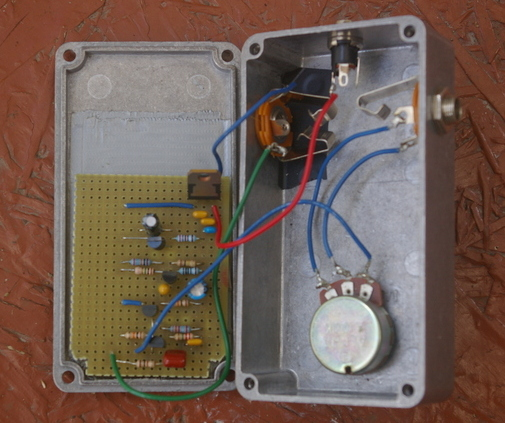
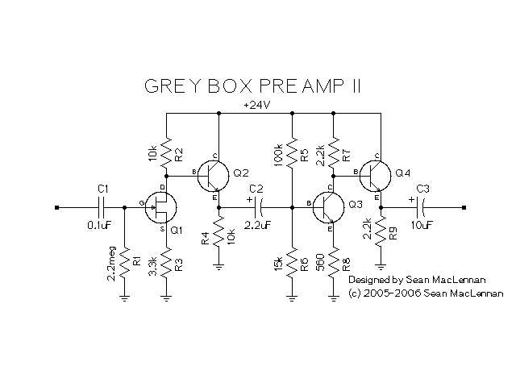

This is a clean preamp that I designed to use with my bass, a power amp, and a cab at a rehearsal space. (Rehearsal space being a fancy name for the singers basement.)


I am very proud of this preamp since, unlike the mu-preamp, I designed it from the ground up. Although there is nothing special about the design, at least it is all mine.
The design started as an all transistor design using only MPSA18s. (Original design) The original design had three stages: input buffer, first gain stage, second gain stage. I did not design the input buffer, I got it from the Acoustic Control 360 Bass Preamp schematic.
I breadboarded the original design and it worked. Then I realized that a FET could provide both the high input impedance and the first gain stage. So I switched to the current design. And got rid of the part I did not design in the process.
You may notice that the every stage has paired transistors. The second transistor acts as a buffer. For the first stage, it provides a high impedance to the FET to maximize its gain.
For the second stage, the buffer is required to provide a nice low output impedance for the power amp. The power amp I am using has a 10K input impedance. I measured the output impedance of the NPN gain stage without the buffer at about 3.5K. With the buffer it is about 16 ohms. Much better.
This design has a much cleaner sound than the mu-preamp. However, guitar players might like the sound of the mu-preamp better.
Credit goes to the guys at the DIYstompboxes.com forum.
Extra credit goes to R.G. and George Giblet for going above and beyond the call of duty answering my questions. I owe you a beer.
April 2007 Removed gain control.
October 2006 Updated the schematic to move the gain control.
April 2006 New schematic with components given a reference. Added 1M level idea. Added decreasing R3 for more gain.